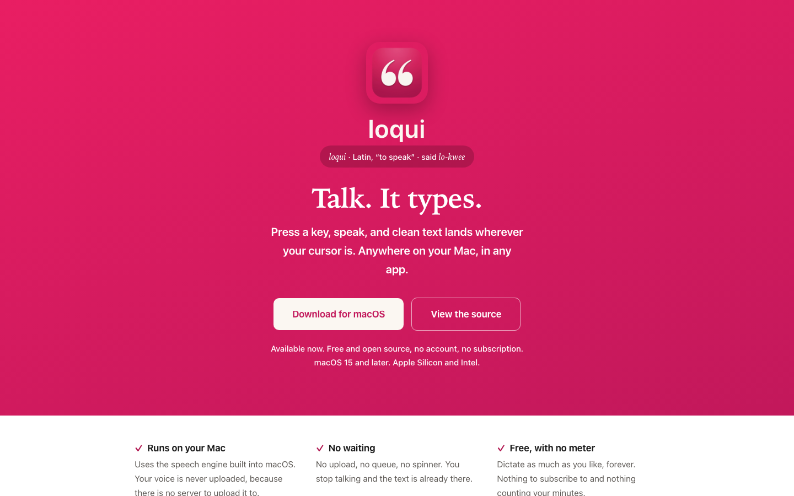
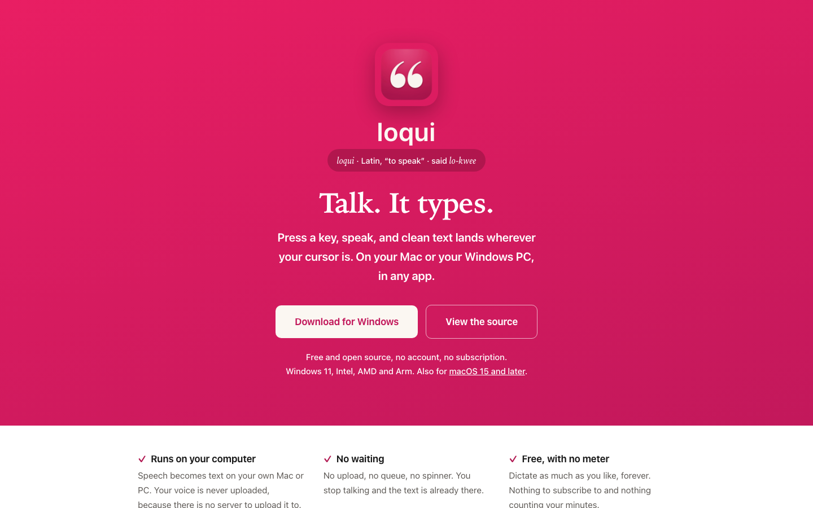
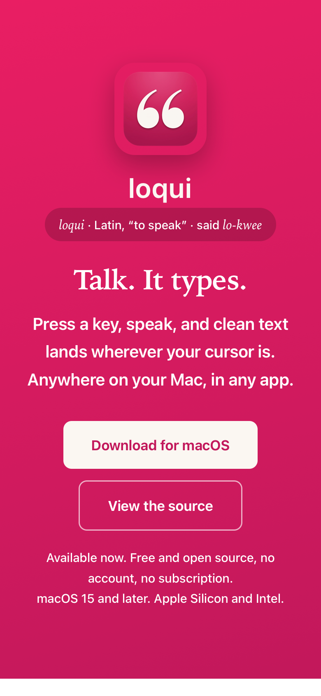
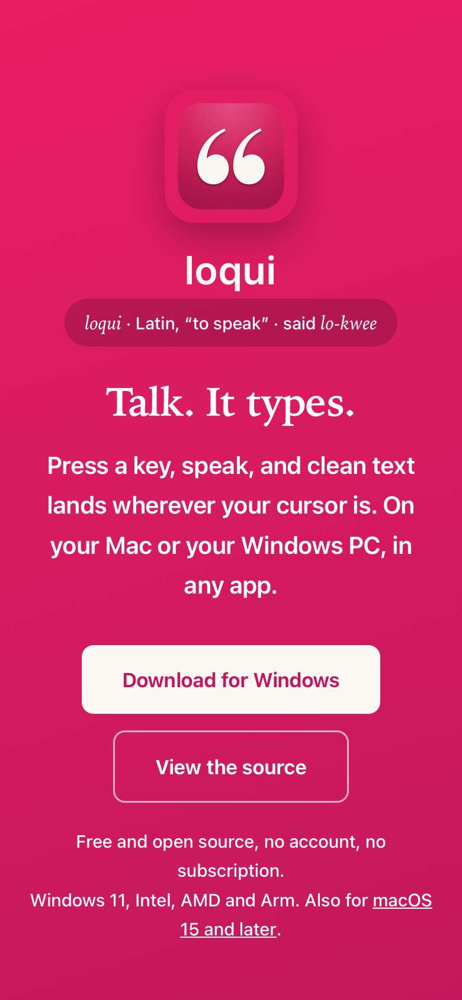

Loqui · Plan · Draft 1 · November 10, 2026
Loqui for Windows, step 6: launch
Anyone on Windows can find Loqui on the download page, read how it works on Windows in the README, and install the first public Windows version.
What approving this does. A builder adds Windows to the download page, README, security policy and roadmap, and readies the first public Windows version. It goes public only when you approve it at Ready to ship. It accepts my recommendations below unless you change one.
Your words
November 10, to Aiva"I need you to have it spin up a plan to create a Windows version of this product."
What changes
- The download page offers the right download. A visitor on Windows sees "Download for Windows" first and a link for the Mac underneath; a Mac visitor sees what they see today. Without scripts, both buttons show. The "Runs on your Mac" card becomes "Runs on your computer".
- The Windows button always gets the newest approved version. Each time you approve a version, the link moves to it by itself.
- The README covers Windows. How to install, the microphone switch, what's stored where (your history stays in your own Windows profile, as plain text, with the same retention choices), the security model (the keyboard watcher only acts on your shortcut, loqui runs without administrator rights, signed in your name), uninstalling, and building it yourself.
- The privacy promise is unchanged and now names both update lists, so anyone can read the exact file their copy checks.
- Security policy and roadmap. SECURITY.md covers Windows (the keyboard watcher, the update chain, the clipboard), and ROADMAP.md lists Windows as shipped.
- The first public Windows version. After its time on the test channel, you approve it and it goes to everyone.
Who it's for: public.
Screens, before and after
"Before" is the live download page today. "After" is the same page with the changes made in it, as a Windows visitor sees it. Click any picture to see it big.
The download page




Empty, loading, error and no permission
- Empty: on a phone or tablet, the page shows both buttons with the line "loqui runs on Mac and Windows computers."
- Loading: a plain static page; nothing to wait for.
- Error: if the visitor's computer can't be told, both buttons show.
- No permission: none; the page is public.
Risk
Not risky. Why: no data, sending, money or keys change here. It is one way, though: once the first Windows version is public, people will have it installed. That's why it goes out only after your approval at Ready to ship, and step 5's Roll back is ready before it does.
Decisions, with my recommendation
Approving this draft says yes to each recommendation unless you change one.
1. One download page or two
- Recommended: one page that puts the visitor's own computer first.
- A separate Windows page linked from the current one.
Why: one product, one page; the privacy and feature sections apply to both.
2. The first Windows version number
- Recommended: 0.1.0, counted separately from the Mac.
- 1.0.0.
- Match the Mac's numbers, releasing both together.
Why: the Mac started at 0.1; the two apps ship on their own schedules, so tying numbers together would force empty releases.
3. When it goes public
- Recommended: after at least a week of daily use on your Windows test machine on the test channel with nothing broken.
- As soon as this step is built and checked.
Why: it's the first time anyone else installs it, and a week of real use catches what the checks can't.
Not in this plan
- Announcing it anywhere (newsletter, jameslaws.com, social posts).
- The Microsoft Store and winget.
- Any change to the Mac app or its release.
Checkpoints
- The page (staging: a private preview of the changed page on the Mini, opened on your MacBook, your phone and the Windows test machine): the Mac and phone show today's wording with Windows added; Windows shows "Download for Windows" first. LAUNCH-01 to LAUNCH-04, A11Y-03
- The words (GitHub, the pull request): README, SECURITY.md, ROADMAP.md and CONTRIBUTING.md read right for Windows. LAUNCH-05, LAUNCH-06
- Go public (Ready to ship): approve the tested version in Promote. On the Windows test machine, open the live page, click Download for Windows, install and dictate. On the MacBook, the Mac download still gets the Mac app. LAUNCH-07 to LAUNCH-09
For the agents
Build notes
- Checks to turn green: LAUNCH-01 to LAUNCH-09, A11Y-03.
- Existing code to reuse:
docs/index.html(its tokens, AA notes and structure; keep its look),plans/windows-launch/shoot.mjs(the exact wording changes shown above), README sections Install, Permissions, Privacy, Security model, Uninstall, Requirements, Development. - Choosing the button: a few lines of script reading the platform; both buttons in the HTML, so with no script both show. Windows screenshots for the page come from step 3 and 4's Windows check pictures.
- The Windows link: the button points at
docs/windows/download.html, a tiny page that forwards to the current stable installer;windows-promote.ymlrewrites it withstable.jsonon every promote. GitHub's "latest release" stays the Mac's, so the README's Mac link keeps working. - Shared interfaces and owners:
docs/windows/download.htmlis added here and owned by the Promote workflow from then on. Step 5's feeds are read, not changed. - Data and outside services: GitHub Pages and Releases only.
- Can't be undone: the first public Windows release. Roll back (step 5) is tested first.
- Staging and rollback: the changed page is served as a private workspace preview on the Mini (
ws, just James) before merge, because Pages publishesdocs/only on merge. Going back on the page is a revert; going back on the app is step 5's Roll back. Record the launch in PROJECT.md and the platform registry's Loqui row.